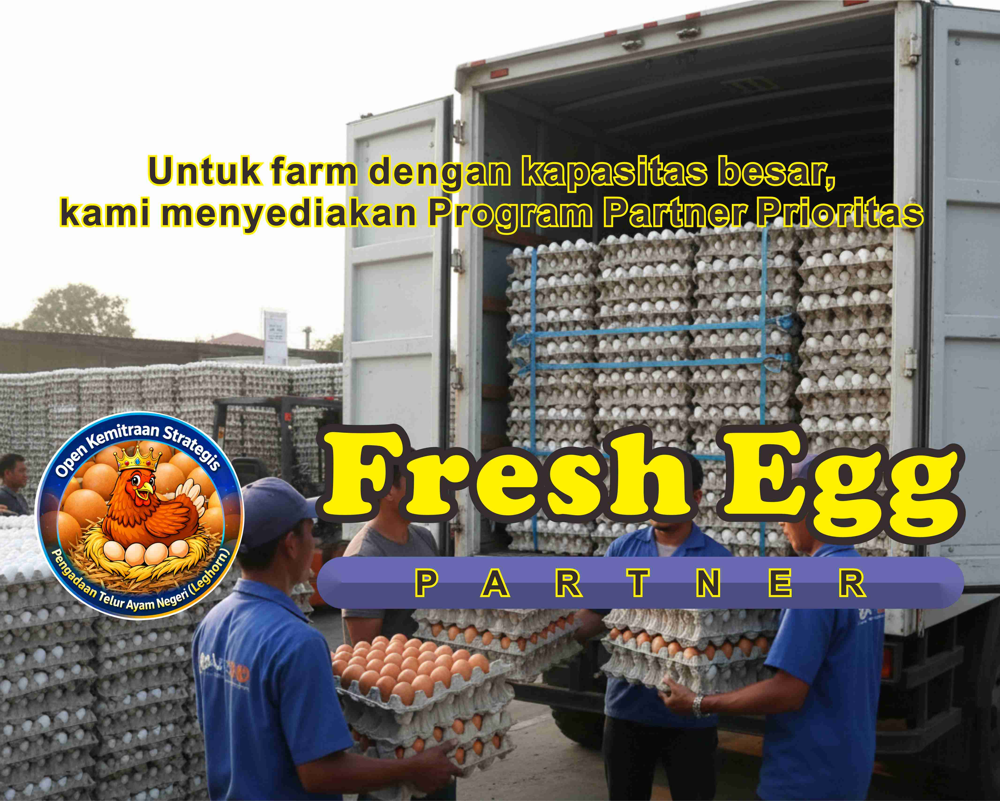

KAMI MENYERAP
PRODUKSI TELUR AYAM NEGERI
(LEGHORN)
Bukan toko. Bukan eceran. Bukan makelar.
FreshEgg adalah platform penyerapan & agregasi produksi telur ayam negeri
untuk kebutuhan distribusi skala besar, program nasional, dan pasar komersial.
❌ Tidak melayani eceran
❌ Tidak pembelian satu kali
❌ Tidak dropship / reseller
SAYA PETERNak / FARM
SAYA BUYER

Peran FreshEgg di Rantai Pasok
📦 Agregator produksi dari banyak farm
🚚 Offtaker penyerapan terjadwal
📊 Manajemen pasokan & distribusi
🏛️ Dukungan pasar komersial & institusi
Untuk Peternak & Farm
Kami membuka kemitraan bagi peternak ayam petelur (Leghorn) dengan produksi aktif & konsisten.
⚠️ Pendaftaran akan diseleksi berdasarkan kapasitas & konsistensi produksi
✔ Produksi rutin & stabil
✔ Siap kerja sama jangka menengah–panjang
✔ Skema pengambilan terjadwal
Ajukan Kemitraan Farm
Untuk Buyer & Institusi
Kami melayani kebutuhan telur ayam negeri untuk:
🏫 Program gizi & institusi
🍽️ Katering & horeca
🏭 Industri pangan
Ajukan Kebutuhan Pasokan
Menuju Infrastruktur Telur Nasional 2026
FreshEgg dikembangkan sebagai jembatan digital antara peternak rakyat,
pasar komersial, dan program ketahanan pangan nasional.
WhatsApp